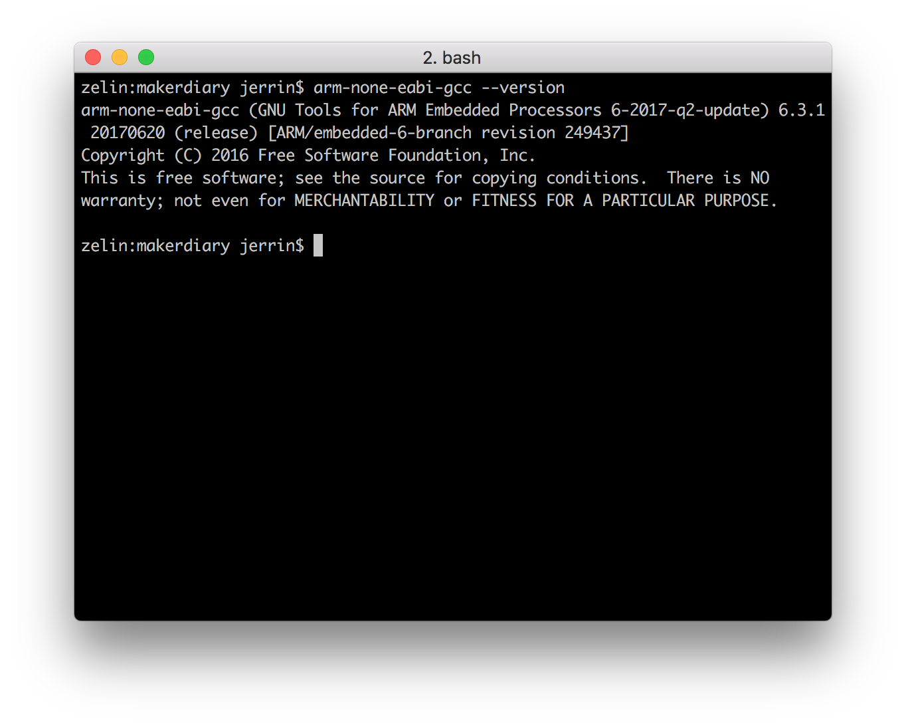

nRF5 SDK
Nordic 官方针对 nRF5x 系列 SoC 的软件开发包¶

简介¶
nRF5 SDK 是 Nordic 针对 nRF5x 系列芯片提供的软件开发环境，包含各种外设驱动、代码库、应用示例、低功耗蓝牙协议栈以及其他具有专利的无线协议栈。
nRF5 SDK 以 .zip 压缩包的形式发布，这样可以便于开发者自由选择开发环境。
我们已经为 nRF52832-MDK 提供了一些简单的示例，确保能够利用 nRF5 SDK 快速开发你自己的应用。
在此之前，你需要搭建一个基本的开发环境，推荐使用 GNU Arm Embedded Toolchains。
搭建开发环境¶
你可以按照以下步骤搭建开发环境，对于不同操作系统，方法大同小异，可以自行摸索。
安装 GNU Arm Embedded Toolchain¶
GNU Arm Embedded Toolchain 是 Arm 公司提供的 GNU 开源工具链，集成 GCC 交叉编译器、标准库以及其他实用工具，使开发者能够轻松开发基于 Arm Cortex-M 和 Cortex-R 的软件。该工具支持跨平台，可以运行在 Windows，Linux 和 macOS 平台上。
你可以通过以下链接下载该工具链：
下载、安装 6-2017-q2-update 版本，并将工具链的目录添加到系统环境变量中：
# in ~/.bash_profile, add the following script export PATH="<path to install directory>/gcc-arm-none-eabi-6-2017-q2-update/bin:${PATH}"
可通过以下命令验证是否安装成功：
$ arm-none-eabi-gcc --version

安装 GNU make¶
nRF5 SDK 依赖于 makefile 的方式，因此需要 GNU make 工具来处理 makefile。
在 Windows 平台，最简单的方式是安装一个 Unix 开发环境，例如 MSYS2。你可以按照以下步骤进行配置：
-
前往 MSYS2 官网下载软件并安装（64 位系统选择 "x86_64"，32 位系统选择 "i686"）；
-
打开 MSYS2，更新系统软件包：
$ pacman -Syu
-
如果需要的话，关闭 MSYS2，重新运行以完成更新：
$ pacman -Su
-
安装
git、make、python2等工具：$ pacman -S git make python2
Linux 和 macOS 系统一般自带 make 工具，可以通过 make -v 命令查看该工具是否可用。对于某些 Linux 发行版可能需要另行安装，例如在 Ubuntu 系统可以通过以下命令安装：
$ sudo apt-get install build-essential checkinstall

安装 nRF5 SDK¶
你可以直接从 Nordic 官网下载 nRF5 SDK，该软件包以 .zip 压缩包的方式发布，例如 nRF5_SDK_15.0.0_a53641a.zip。
你需要将该软件包解压到 nrf52832-mdk 仓库，一般目录结构如下：
./nrf52832-mdk/ ├── LICENSE ├── README.md ├── bin ├── docs ├── examples ├── mkdocs.yml ├── nrf_sdks │ └── nRF5_SDK_14.2.0_17b948a │ └── nRF5_SDK_15.0.0_a53641a └── tools
设置工具链路径，对于 Linux 和 macOS 主要修改 makefile.posix 文件，Windows 系统则修改 makefile.windows，这两个文件位于以下目录：
<SDK>/components/toolchain/gcc
使用文本编辑器（例如：Sublime）打开该文件，将 GNU_INSTALL_ROOT 设置为前面安装的 GNU Arm Embedded Toolchain 的目录，参考设置如下：
GNU_INSTALL_ROOT := $(HOME)/gcc-arm-none-eabi/gcc-arm-none-eabi-6-2017-q2-update/bin/ GNU_VERSION := 6.3.1 GNU_PREFIX := arm-none-eabi
编译运行第一个示例¶
现在你可以尝试编译第一个示例了，简单起见，我们以 blinky 为例：
打开命令行终端，切换到示例目录：
$ cd ./nrf52832-mdk/examples/nrf5-sdk/blinky/armgcc/
将 nRF52832-MDK 连接到 PC，运行以下命令即可完成编译和固件下载：
$ make flash
观察 RGB LED 是否开始闪烁：

运行带 SoftDevice 的示例¶
你也可以运行带具有 Bluetooth 或 ANT 无线功能的例子，在此之前需要先下载 SoftDevice 固件。该固件以 .hex 的方式提供，你可以在以下目录找到：
<SDK path>components/softdevice/SoftDevice/hex
或者直接从 nordicsemi.com 网站下载。
我们已经在 makefile 提供下载 SoftDevice 的命令，可以直接运行下载：
# 运行flash_softdevice 可以只下载 SoftDevice $ make flash_softdevice # 运行 flash_all 可以下载SoftDevice 和 app 合并后的固件 $ make flash_all
更多示例¶
至此，你应该已经掌握如何编译运行基于 nRF5 SDK 的示例，我们还会不断增加一些新的示例到 nrf52832-mdk 仓库中，敬请关注！
参考资源¶
问题反馈¶
如果在开发过程遇到任何问题，可以通过 GitHub Issue 反馈。